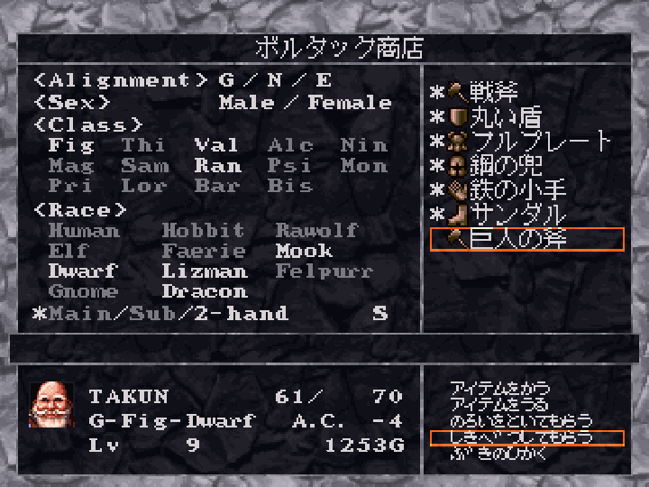

スカウトキャラ20人だけを使ってダイアモンドドレイク討伐を目指す。また、ゴーレムルートで最終ガーディアンの迂回を試みる。
スカウトキャラの一覧を酒場出現キャラクタ一覧より引用：
| 名前 | lv | 種族 | 歳 | 性 | 規 | 職 | 力 | 知 | 信 | 体 | 素 | 運 | 装備と持ち物 |
|---|---|---|---|---|---|---|---|---|---|---|---|---|---|
| GAOMA | 7 | ノーム | 38 | 男 | 中 | モ | 15 | 10 | 17 | 8 | 16 | 9 | 皆朱の槍,革鎧,フェザー帽子,サンダル |
| GARNET | 7 | 人間 | 26 | 女 | 中 | バ | 12 | 12 | 14 | 15 | 12 | 10 | 胸当て,革の小手,鋼の兜,黒いブーツ |
| ZAI-KA | 5 | ドワーフ | 51 | 男 | 中 | 侍 | 14 | 13 | 11 | 14 | 13 | 10 | 刀,わらじ,足軽の鎧,手甲 |
| ユーリー | 6 | エルフ | 23 | 女 | 中 | 魔 | 11 | 16 | 15 | 11 | 12 | 12 | 鞭,ローブ,魔法の頭巾,サンダル |
| MAKAROPH | 12 | ノーム | 35 | 男 | 中 | 超 | 14 | 15 | 13 | 16 | 14 | 15 | 堅い杖,ローブ,魔法の頭巾,サンダル |
| Z2 | 6 | エルフ | 30 | 男 | 中 | 詩 | 9 | 15 | 12 | 9 | 12 | 11 | 革鎧,サンダル,革の兜,革の小手 |
| FUJIWARA | 9 | 人間 | 40 | 男 | 中 | 詩 | 13 | 14 | 11 | 12 | 9 | 14 | リュート,天使の笛,革鎧,サンダル |
| 名前 | lv | 種族 | 歳 | 性 | 規 | 職 | 力 | 知 | 信 | 体 | 素 | 運 | 装備と持ち物 |
|---|---|---|---|---|---|---|---|---|---|---|---|---|---|
| CHYOKO | 7 | フェアリ | 17 | 女 | 善 | 詩 | 9 | 16 | 10 | 10 | 18 | 15 | 吹き矢,妖精の服,リュート,傷薬7 |
| TAKUN | 8 | ドワーフ | 54 | 男 | 善 | 戦 | 18 | 8 | 15 | 14 | 10 | 7 | 戦斧,鎖帷子,鋼の兜,サンダル |
| YOUBANKS | 9 | 人間 | 17 | 男 | 悪 | 司 | 11 | 15 | 15 | 11 | 13 | 14 | メイス,鎖帷子,フェザー帽子,サンダル |
| CORYOON | 8 | ドラコン | 28 | 男 | 悪 | 君 | 15 | 12 | 14 | 13 | 13 | 16 | ロングソード,フルプレート,丸い盾,鉄の小手 |
| 名前 | lv | 種族 | 歳 | 性 | 規 | 職 | 力 | 知 | 信 | 体 | 素 | 運 | 装備と持ち物 |
|---|---|---|---|---|---|---|---|---|---|---|---|---|---|
| HANY | 7 | フェルパ | 20 | 女 | 悪 | 盗 | 11 | 13 | 10 | 11 | 19 | 16 | 鞭,革鎧,サンダル,革の盾 |
| メタルヘッド | 10 | ラウルフ | 20 | 男 | 悪 | 僧 | 12 | 13 | 17 | 8 | 11 | 14 | メイス,鎖帷子,革の盾,サンダル |
| ジーラ | 9 | リズマン | 21 | 女 | 悪 | 錬 | 10 | 13 | 11 | 12 | 11 | 17 | 堅い杖,ローブ,魔法の頭巾,サンダル |
| KOUICHI | 4 | 人間 | 34 | 男 | 悪 | 僧 | 12 | 12 | 14 | 11 | 11 | 10 | メイス,鎖帷子,革の兜,サンダル |
| コロヒチ | 7 | ホビット | 16 | 男 | 善 | 司 | 9 | 16 | 16 | 10 | 12 | 14 | メイス,革鎧,サンダル,丸い盾 |
| MARBERIK | 4 | 人間 | 27 | 男 | 善 | 魔 | 13 | 17 | 11 | 12 | 12 | 11 | 棒,身かわしの衣,フェザー帽子,サンダル |
| FREEWIND | 8 | エルフ | 24 | 男 | 善 | レ | 12 | 10 | 12 | 11 | 10 | 12 | 小型の弓,硬い革鎧,サンダル,革の小手 |
| 名前 | lv | 種族 | 歳 | 性 | 規 | 職 | 力 | 知 | 信 | 体 | 素 | 運 | 装備と持ち物 |
|---|---|---|---|---|---|---|---|---|---|---|---|---|---|
| NINMARS | 6 | ホビット | 28 | 男 | 善 | 忍 | 17 | 8 | 9 | 14 | 17 | 11 | 忍者刀,忍びの装束,わらじ,忍びの覆面 |
| 名前 | lv | 種族 | 歳 | 性 | 規 | 職 | 力 | 知 | 信 | 体 | 素 | 運 | 装備と持ち物 |
|---|---|---|---|---|---|---|---|---|---|---|---|---|---|
| TAWO | 9 | ラウルフ | 20 | 女 | 善 | 僧 | 13 | 11 | 16 | 13 | 12 | 14 | 堅い杖,硬い革鎧,革の兜,サンダル |
これで最初から獲得できるスカウトキャラ11人が揃う。以下短評：
これらのメンバーより選抜し、以下の編成で攻略を進める。
| 名前 | 種族 | 規 | 職 |
|---|---|---|---|
| TAKUN | DWA | G | FIG |
| ZAI-KA | DWA | N | SAM |
| GARNET | HUM | N | VAL |
| GAOMA | GNO | N | MON |
| MAKAROPH | GNO | N | PSI |
| CHYOKO | FAE | G | BAR |
まず出発前にMAKAROPHを転職させる。Lv12にして既にPsi7を一つ習得しており、転職してもレベルアップでPsi7の他の呪文を覚えられる。現在のスカウトキャラでアルケミスト呪文を使えるキャラが一人もいないため、転職先にはアルケミストを選択。
今作では序盤から有用なアイテムを宝箱から獲得できるチャンスがあるため、宝箱の識別・解除が重要となる。盗賊技能より最大で識別率95%となるが、CalnovaはAlc7まで覚えられず、CalfoはGARNETの数回分しか使えない。そのためCHYOKOのレベルアップを吟味し、確実に素早さを伸ばすとともに、MAKAROPHのレベルアップも吟味し、毎回Ihalonを習得させてCHYOKOの素早さに注いでいくことにする。
残留メンバーからアイテムと金を回収し、毒消しを買って装備を分配するが、スカウトキャラの初期武器に全て攻撃回数－％(1回)が付いていることが発覚。安価な武器だけでも売って買い直す。途中、ボルタック商店でXYボタンを押すと集金・分配が出来ることに気付く。
準備が終わったら、いよいよ初陣となる。
パーティの初期レベルが高いためボス四体は楽勝。MAKAROPHがZakaldiで呼んできたArch MageのMadaltoが強すぎる。
GARNETの火力が低い。力の低さが響いている気がする。
マーフィー先生は思ったよりタフいが、ACを上げ下げして難なく討伐。
10戦程して帰還後、MAKAROPHとCHYOKOのレベルアップによってCHYOKOの素早さが24に到達。しかし老ホモ二人TAKUNとZAI-KAの特性値がとにかく伸びない。リセマラしても二個同時に上がる世界線が少なすぎる。
3Fでバルボと戦闘、MAKAROPHのLasios一発でバルボ以外が壊滅する。速度の低さに不安はあるが、上さえ取れれば楽勝。その他いつの間にか巨人の斧を獲得していたので、TAKUNに装備させる。適正種族の少なさがプレミアム感を演出する。 